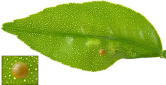
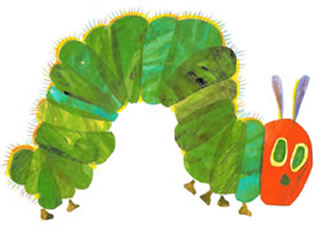
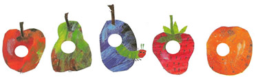
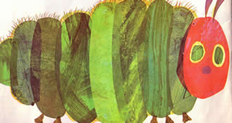
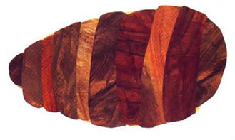
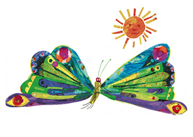

Behaviors Example
Sequencing Mini-lesson
Click to visit Eric Carle's Homepage!
Back to Home
When you think about the order of events, or the order in which something has happened, you are thinking about sequence. You might say, "first this happened, then that happened." Mouseover the images below to learn the sequence of events from an exercpt of The Very Hungry Caterpillar by Eric Carle. There's a surprise at the end!

A tiny egg sat upon a green leaf. Soon, the egg began to move.

Out popped a tiny caterpillar. He stretched and looked around. He realized he was very hungry and immediately began searching for food.

The tiny caterpillar ate one apple on Monday, two pears on Tuesday, three blueberries on Wednesday, four strawberries on Thursday, and five oranges on Friday. He was still hungry!

So, on Saturday, he ate a piece of cake, a cupcake, a piece of pie, a slice of pizza, two hamburgers, and one cotton candy. He was stuffed. The caterpillar soon changed and made a coccoon all around himself.

In a few weeks, out popped a beautiful butterfly!

Click to say good-bye to the butterfly!